A first-party field review. Every number below comes from a log, benchmark file, or project folder on my own machines. Where I extrapolate I mark it with
~. All raw data is indata/*.csv; every figure is traceable to a source listed next to it.
Strata (v0.1.41 at benchmark time) serving Qwen3.8-Flash-Next (a 125B MoE) with resident-experts in RAM is genuinely impressive — and the right quant for the machine you have changes everything.
Ranked for agentic work and usability — speed is not the ranking:
The point: a model that streams fast but loops, truncates, or wedges is useless as an agent no matter its tok/s — every loop or stall costs a human re-launch. The Coder streams at 92.8 tok/s token-weighted yet fails 5 of 11 mixed-script prompts; the dense 27B — a tenth of the MoE's total parameter count — beat the 125B's IQ2_XS on everything it was given, and IQ3_S at 44.5 tok/s still finished an overnight product build with zero degenerate loops.
Bottom line if you have 24 GB of VRAM: the VRAM card size doesn't decide what you can run — system RAM does. A 24 GB GPU + 30 GB RAM → Coder IQ1_M in low-RAM mode is the workhorse (IQ2_XS also fits, but truncates every call). 24 GB GPU + 120+ GB RAM → IQ3_S, the best local 125B I've run. And the dense fallback that works almost anywhere: Qwen3.8-27B UD-Q4_K_M (16.5 GB) on llama.cpp with MTP speculative decoding — ~53–61 tok/s (token-weighted) on a 3090 Ti.
And the RAM is the whole game: the 79 GB IQ3_S pack only fits in yukio's 121 GiB. It cannot run on Pop!_OS (62 GB) or node2 (30 GB) at all.
| Machine | CPU | GPU | RAM | OS | Role |
|---|---|---|---|---|---|
| yukio (headless) | Threadripper 3990X (64c/128t) | 2× Quadro RTX 5000, 16 GB each | 121 GiB | Ubuntu | IQ3_S — the heavy quant |
| node2 (headless) | Ryzen 9 5900X (12c/24t) | RTX 3090, 24 GB | 30 GB | Ubuntu 26.04.1 | IQ2_XS + Coder IQ1_M |
| Pop!_OS (desktop) | Ryzen 9 5950X (16c/32t) | RTX 3090 Ti, 24 GB | 62 GB | Pop!_OS 24.04 + Cosmic (Wayland) | 27B llama.cpp baseline; IQ2_XS + IQ3_XXS on Strata |
Headless matters. node2 and yukio are headless systems — no desktop, no compositor, no window manager touching the GPUs. That helps two ways: all VRAM is available to Strata (no desktop eating 1–2 GB of the 3090's 24 GB), and CPU/expert-cache work runs without a compositor in the way. The desktop box is the opposite: the 3090 Ti is shared with the Cosmic compositor and with the 27B llama-server that runs my Hermes sessions. I did experience desktop freezes under sustained load during those runs — but I have no log of it, so treat that as anecdotal. Nothing in any log pins a crash on the desktop. (The exit -6 crash loop that looks like it belongs here actually happened on node2 — failure log F1.)
--spec 4 flag: MTP speculative decoding on, with a budget
of 4 draft tokens per step (draft head: mtp-q2_0.gguf, 889 MB).| Quant | Size | Where it fits | Config |
|---|---|---|---|
| IQ3_S | 79 GB (52 GB + 27 GB GGUF shards) | yukio only (121 GiB) | 131072 ctx, KV int8, spec 4, MTP, resident-experts, reasoning_effort=low, budget 2048 |
| IQ2_XS | 68 GB (39.2 + 28.8 GB) | node2 (low-RAM mode) + Pop (full residency) | 131072 ctx, KV int8, spec 4, MTP |
| Coder IQ1_M | 58 GB (29.6 + 28.8 GB) | node2 | 131072 ctx, KV int8, spec 4, MTP |
| IQ3_XXS | 2 shards (shard 1 = 47.0 GB) | Pop (62 GB) | ran with a mapped-host-memory (mmap) fallback; first download failed (HTTP 416, F2) |
One wording fix I owe: "IQ2_XS is the lowest quant tier" was wrong. IQ2_XS (2-bit) and Coder IQ1_M (1.5-bit i-quants) are different models, so their quant tiers don't compare on one axis. IQ2_XS is the lowest-quality base quant I ran; Coder IQ1_M has fewer bits but is a Coder fine-tune.
The trick that makes any of this work at all: the experts don't fit in a GPU,
so Strata page-locks them into resident RAM and keeps only a hot subset in
the GPU cache. IQ2_XS on node2: 16.95 GiB experts page-locked, 3865 experts
cached in the 3090. Coder IQ1_M: 12.66 GiB resident, 7437 cached
(data/engine_throughput.csv, notes column).
The first Strata install on Pop!_OS failed on the download: the setup script's
resume path hit HTTP Error 416: Range Not Satisfiable seven times, wrote
67.6 GB to disk while the server said the shard was 47.0 GB, and exited
(SETUP_EXIT=1). I deleted, re-downloaded, and the model ran fine afterward
(strata_iq3_xxs.log — clean generation on the 3090 Ti with the mmap
fallback). The vision-encoder rebuild (llama.cpp submodule) was also
interrupted twice on Pop — both times by my own Ctrl-C, not a compile error
(F3).
Parsed straight from the serve logs' … generated in N ms (Y tok/s) lines
(data/cross-quant.csv). Two different decode averages are now shown:
per-request (mean over calls — inflated by tiny calls) and
token-weighted (total tokens ÷ total generation time — what you actually
experience while content streams):
| Quant / machine | Reqs | Decode per-req avg / med | Decode token-weighted | Prefill avg / med | Gen tokens |
|---|---|---|---|---|---|
| IQ3_S — yukio (2× RTX 5000, 121 GiB) | 1,203 | 49.3 / 50.4 | 44.5 | 250.5 / 137.7 | 772,658 |
| IQ2_XS — node2 (3090, 30 GB) | 4,823 | 102.1 / 106.1 | 30.8 | 477.7 / 414.5 | 724,983 |
| Coder IQ1_M — node2 (3090, 30 GB) | 313 | 85.6 / 84.6 | 92.8 | 817.5 / 335.9 | 506,382 |
| IQ3_XXS — Pop (3090 Ti, mmap) | 83 | 39.5 / 27.0 | 23.9 | — | — |
| Qwen3.8-27B — Pop (llama.cpp, UD-Q4_K_M) | 96 + 84 | 54.8 / 54.8 (eval-time, per request) | 60.7 (guide window) / 53.1 (cards window) | — | 559,700 + 94,969 |
The 27B numbers come from journalctl -u llama-qwen print_timing lines,
token-weighted by generated tokens over the two benchmark windows.
Why the two IQ2_XS numbers differ 3×: 69% of its 4,823 calls generated under 100 tokens (the truncation bug, Benchmark 5) and those short calls average ~113 tok/s, while calls over 400 tokens average ~65 tok/s. The per-request average is dominated by the truncated calls; the token-weighted rate is the honest sustained speed.
Three honest readings:
dubai-traffic-game/BENCHMARK.md), running a 79 GB model across two Turing
cards. I did not isolate why it's slower — "bandwidth-limited" was a guess
in an earlier draft and I'm withdrawing it as unmeasured.prompt chunk auto: 8192 tokens);
the median (336) is the more honest number.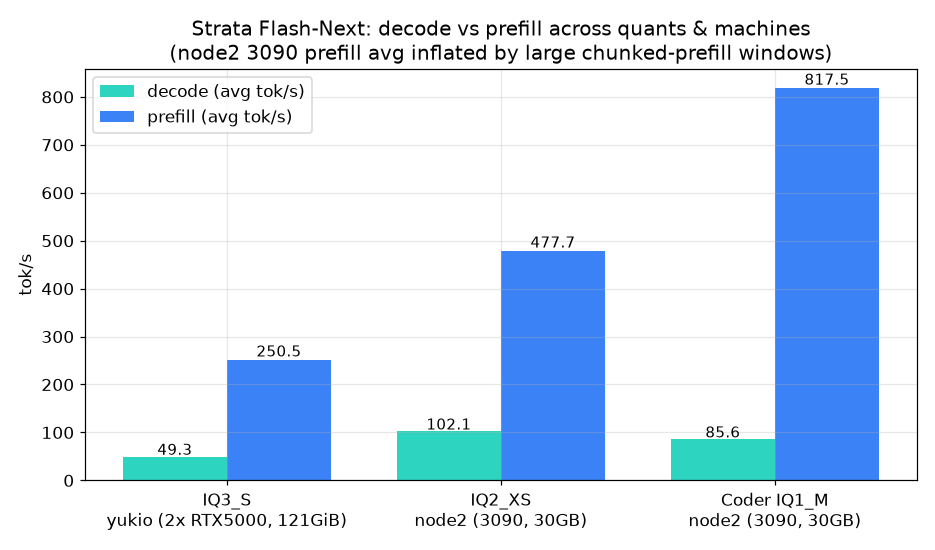
This is the single most important hardware finding. The IQ3_S GGUF pair is 79 GB on disk (52 GB + 27 GB shards), and Strata's resident-experts mode page-locks the expert pack into RAM while the GPUs hold only a cache of it.
| Machine | RAM | IQ3_S (79 GB) | IQ2_XS (68 GB) | Coder IQ1_M (58 GB) |
|---|---|---|---|---|
| yukio | 121 GiB | ✅ runs (55 GiB used at capture) | ✅ ran (30 reqs) | ✅ |
| Pop!_OS | 62 GB | ❌ cannot | ✅ ran, full residency (39 GB fits in 62 GB; clean serve, no crash in strata-pop.log) |
⚠️ smaller quants (IQ3_XXS via mmap) |
| node2 | 30 GB | ❌ cannot (needs 2.6× the RAM) | ⚠️ first full-residency attempt aborted (F1) → works in low-RAM mode (16.95 GiB resident) | ✅ low-RAM mode (12.66 GiB) |
So the highest-quality quant I have access to — the one that built the Dubai game — is literally not possible on the other two machines. On node2, IQ2_XS is the ceiling: it needed both low-RAM expert residency and a clear 3090 (the first attempt died in a VRAM-abort loop, F1). On Pop!_OS the 68 GB IQ2_XS fits in 62 GB with headroom and ran cleanly — no low-RAM mode was ever needed there; low-RAM mode was node2's 30 GB workaround.
The heaviest real task Flash-Next ever did: build Dubai Traffic — a
DICE-style board game about commuting in Dubai — from a one-line idea to
printable files. Everything (research, game design, card JSON, simulation,
balance tuning, website, art direction, print PDFs) was executed by Flash
Next IQ3_S on yukio:8080 through OpenCode v1.19.0, reached from Pop via SSH
tunnel, orchestrated by Hermes. Comparison phases re-done by Qwen3.8-27B.
data/dubai-build-phases.csv (source: dubai-traffic-game/BENCHMARK.md):
| Phase | Task | Wall | OC runs | Errors | Result |
|---|---|---|---|---|---|
| 1 | Research — 6 docs (roads, hubs, costs, culture, scams, community) | 51 m | 6 | 0 | 95 KB / 1209 lines, 111 HTTP reqs all 200, [VERIFIED]/[ASSUMED] tagged |
| 2a | Game design + card JSON | 32 m | 2 | 0 | 13-section rules, 81 cards total, 172 i18n keys, 0 missing |
| 2b | Simulation + balance tuning | 17 m | 1 | 0 | sim.py (23 KB), 10 tuning iters, deterministic (identical hash on re-run); model found its own bluffer-exploit bug |
| 3 | Website | 19 m | 1 | 0 | static site, 136 i18n keys, 0 leaked; picker computed a 37-min / AED 6 / karak 3 route; browser-verified |
| 5 | Art direction | 7 m | 1 | 0 | STYLE_GUIDE "DUSK COMMUTER POP" + 39 prompts in 5 files (generation itself failed — yukio's GPU image pipeline was broken, not the LLM) |
| 6 | Print PDFs | 31 m | 3 | 2 (permission gates) | 42 KB reportlab script, 6 PDFs (board 50×35 cm vector, 21 card pages, box, 9-page rulebook, tokens, prototype); pypdf-verified 81/81 card names match cards.json |
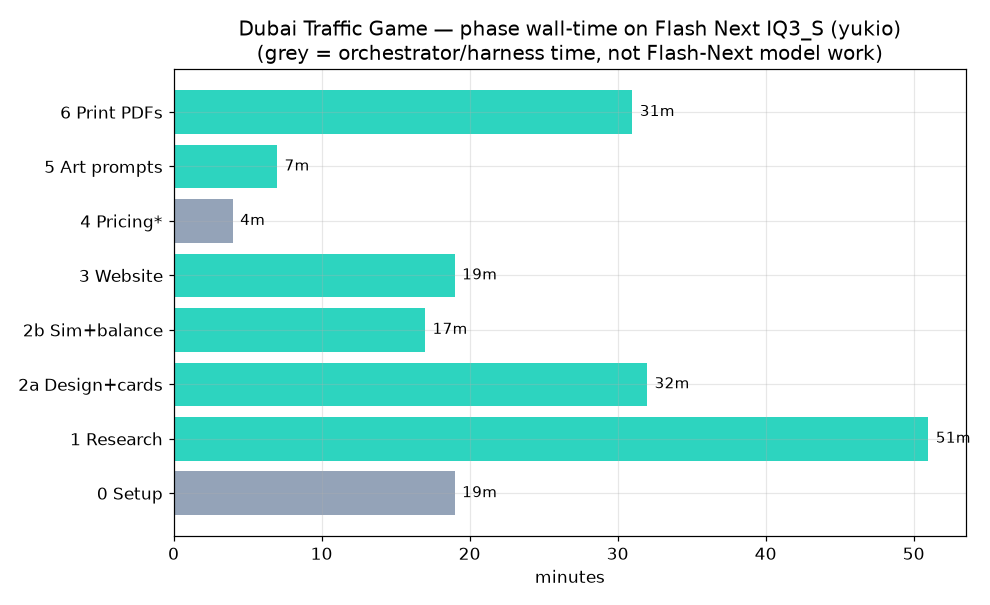
The Flash-built website, home page.
The route picker — computed from cards.json, browser-verified.
Totals: 14 Flash-Next task files, 01:30→09:08 (+04), ~7 h 38 min
overnight. Logged errors/retries: 7, all environmental (env-var not
expanded, PATH, npm fetch hang, SearXNG off-topic results, web_extract
blocked, the 157 s dead-tunnel "wrong API key" retry, 2× OpenCode permission
gates). The phase table above only counts in-table errors (phase 6's two
permission gates); the other five happened in the research/build setup before
and between phases. Separately, BENCHMARK.md's self-assessment names one
model-side failure mode: context overflow on unsupervised research
("mitigated, not cured — needs fit_max_tokens on the server").
"9 of 10 tasks finished RC=0" (verbatim from the BENCHMARK.md self-assessment): that's the self-assessment's own count of 10 build tasks grouped from the 14 task files — 9 ended RC=0 with verified deliverables; the one that didn't is the research task that hit context overflow (the failure mode named in the same assessment). It was recovered with a retry; the deliverable landed.
Head-to-head on the website (Phase 3): Qwen3.8-27B did the same page in 13 m vs Flash's 19 m (~30% faster), and even caught a real Salik toll discrepancy (SZR = AED 12, not AED 6) that Flash missed. On art direction C1's two-ink risograph concept beat Flash's dusk-poster look. Flash-Next won on scale and organization (136-key i18n, per-category prompt tiers) and on long-task stamina — D2 (764 s), W1 (19 m), P1 (31 m) all finished without losing the thread.
The failure that wasn't the model: yukio's ComfyUI/Qwen-Image diffusion pipeline produced pure-noise images on 100% of outputs (vision-scored 1/10, even for "red circle" with an empty prompt) — a broken Turing/cu130 venv env on the Quadro cards. The LLM's 39 art prompts were fine; the pixels were the GPU environment's fault. (Fixed by re-rendering the final 33 map tiles on node2's ComfyUI: 33/33 clean.)
Harness bugs found (documented in FAILURE-REPORT.md): 6 concurrent
opencode.exe runs in one workdir race OpenCode's shared XDG state → all
fast-fail "wrong API key" (fix: serialize); Strata transient 1–2 s 401s
(fix: retry ≤3× on fast-fail); reasoning_content eating small max_tokens
(fix: fit_max_tokens: true in the Strata config — applied + verified).
Same prompt, two engines, OpenCode 1.18.35. Task: build a "Card Collection"
section — two trading-card decks (Linux commands + computing pioneers), a
rules doc, and a vanilla-HTML site rendering them from JSON
(data/task_card_collection.csv, data/card-bench-ab.csv):
| Strata Coder IQ1_M (node2) | Qwen3.8-27B (UD-Q4_K_M, Pop) | |
|---|---|---|
| Wall (first→last event) | 7.5 min | 33.4 min |
| Tool calls | 14 | 32 |
| Output tokens | 35,497 | 73,607 |
| Cards delivered | 50 (27 linux + 23 creators) | 56 (30 linux + 26 creators) |
| Errors in run | 0 | 0 |
Strata-coder finished ~4.4–4.5× faster (33.4/7.5 = 4.45) with fewer tool
calls and less than half the tokens, for a comparable 50 cards. This is
n=1 — one run each — so read it as "plausibly faster by a few ×," not a
measured rate. (The launch-to-last-event basis in card-bench-ab.csv gives
11.1 vs 37.2 min = 3.4×; the conclusion doesn't depend on the basis, but
neither has n>1.) The 27B was more thorough (more cards, more
self-verification); the 125B MoE was dramatically faster.
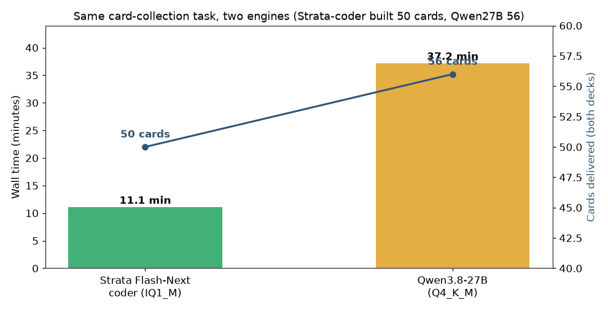
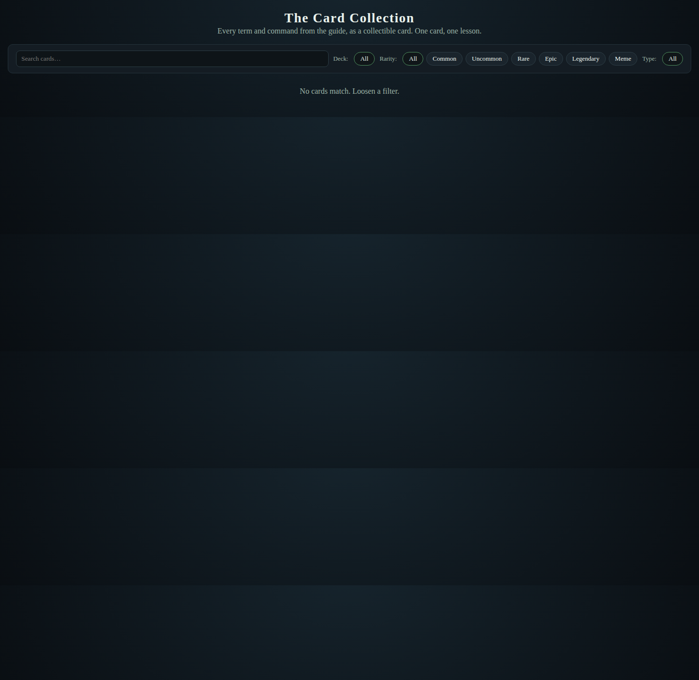
Strata-coder's cards.html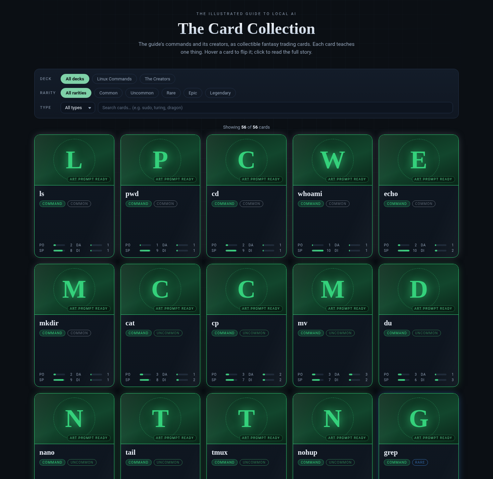
Qwen3.8-27B's cards.htmlRebuild my entire "Illustrated Guide to Local AI" — 11 chapters, 11 SVG
illustrations + PNGs + captions, a website — 100% model-generated, every call
routed to node2. data/task_illustrated_guide_rebuild.csv (raw
flash-next/run-log.jsonl):
| Strata Flash-Next IQ2_XS | Qwen3.8-27B (UD-Q4_K_M) | |
|---|---|---|
| Wall | 14.44 h (Oct 5) | 2.57 h (Oct 6) |
| Active (wall minus idle) | ≈ 3.8 h (one 10.6 h overnight pause = 639 min of the wall; F7) | ≈ 2.6 h (no significant idle gaps) |
| Logged events | 2,494 = 2,220 part-calls (745 ok + 1,299 stall + 89 corrected + 86 degraded + 1 empty) + 274 TOTAL markers | 52 stage attempts across 29 distinct stages |
| ok | 745 (33.6%) | 46 first-pass (88.5% of attempts); all 29 stages completed |
| stall | 1,299 (58.5%) | 0 (0%) |
| corrected / degraded | 89 / 86 | 6 failed attempts, all recovered by retry |
| Deliverable | 11 chapters (draft+final, ~800–950 w each), 11 SVG+PNG+caption, GUIDE.md 9,460 words | 11 chapters (draft+reviewed), 11 SVG, plus 4 card decks and 3 site pages |
The 27B's "52 stages, 46 ok" needed explaining: it's attempts, not
missing stages. 29 distinct stages were all attempted; 46 succeeded first
pass, and the 6 failed attempts were retries — the board-game stage failed
5× (succeeded on its 6th attempt) and svg-ch10 failed once (succeeded on
the 2nd). So nothing was missing: 6 was the retry count, and 0 stages stalled.
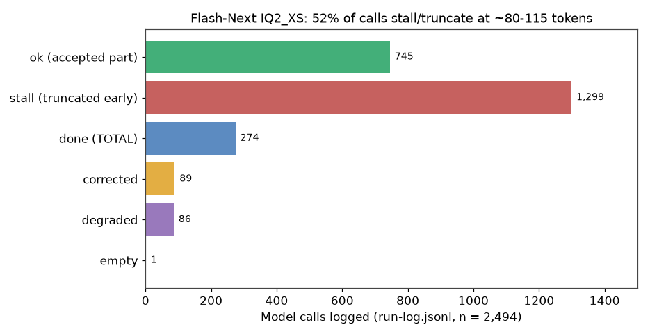
The finding: IQ2_XS truncates on every call — it stops each generation
at ~80–115 tokens, then the stream ends with no finish_reason and no
[DONE] (the engine log confirms it only generated that many). I reproduced
it across max_tokens 600→8000, thinking on/off, temp 0.2/0.7/1.1, and 5
identical prompts. Result: a ~900-word chapter is impossible in one call. I
had to build continuation chaining — feed back only the last ~150 words
with a "continue from exactly here" directive, reject >80% word-overlap
parts, loop to target. That's what the 58.5% "stall" rate is.
Other 2-bit symptoms (all logged): phrase-lock loops in 4/11 chapters (fixed
by a local dedupe pass); only 3/11 SVGs valid on first pass (it mangles XML
attributes — I had to switch to a plain-text element-spec pipeline where the
model writes specs and Python assembles the XML); echoed prompt placeholders
into output; one hallucinated line. The illustration stages were the worst:
stage4 (SVG specs) 339/453 stall (74.8%), stage4b (render) 468/543
(86.2%) (data/flash-next-rollup.csv).
The 27B needed zero scaffolding — every stage completed, and it delivered more in 2.57 h active: the same guide plus 4 card decks and 3 site pages.
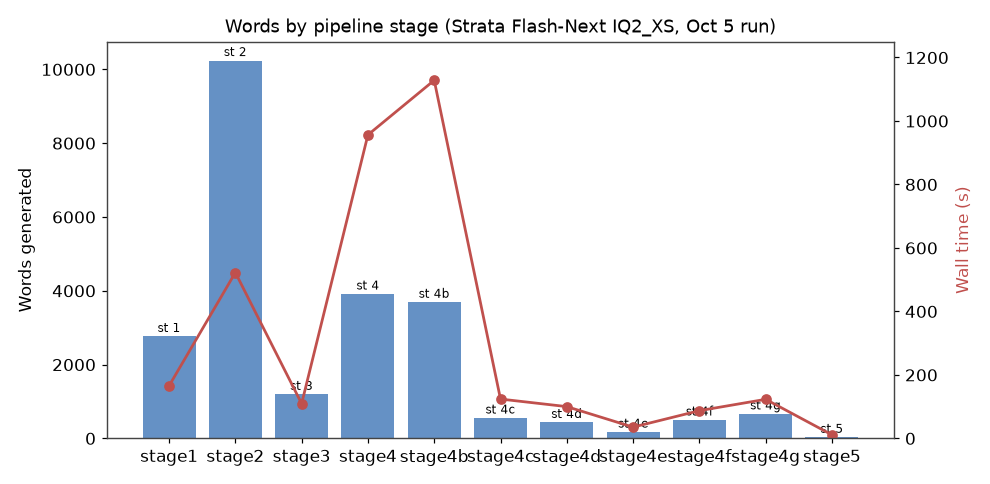
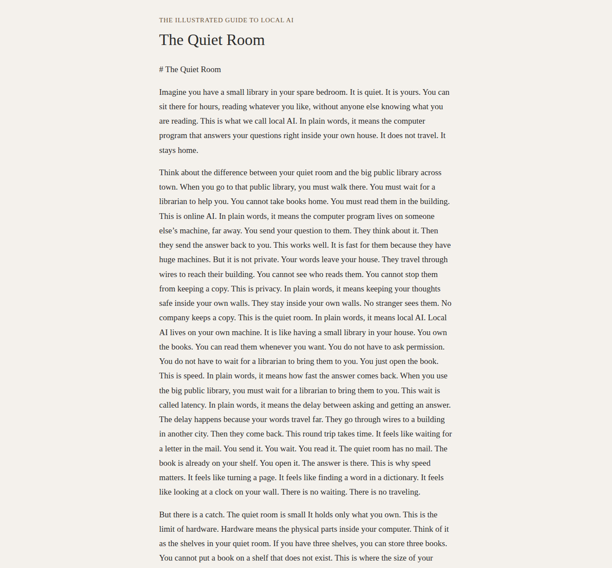
IQ2_XS chapter 1 — only possible via continuation chaining.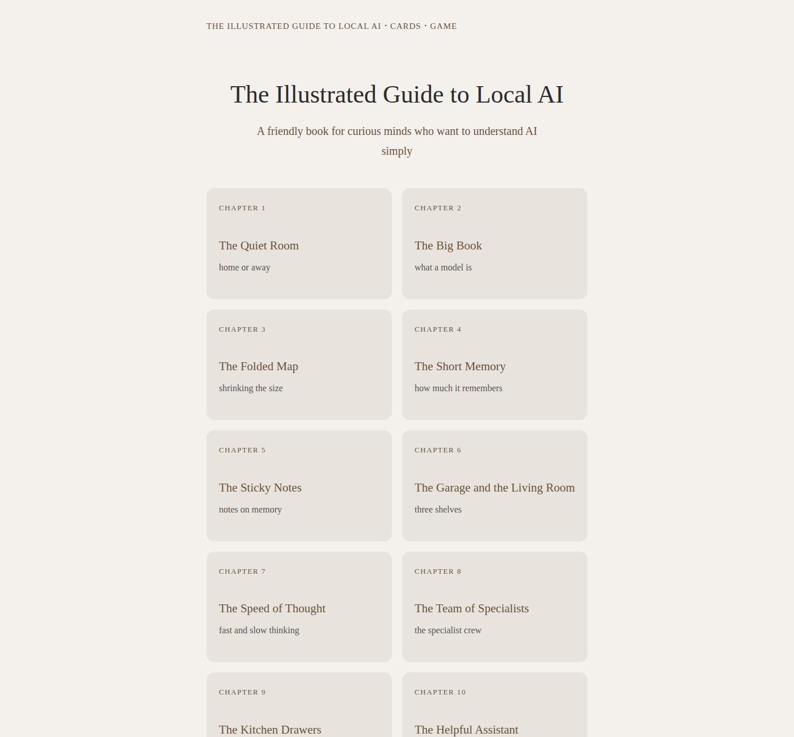
IQ2_XS's site.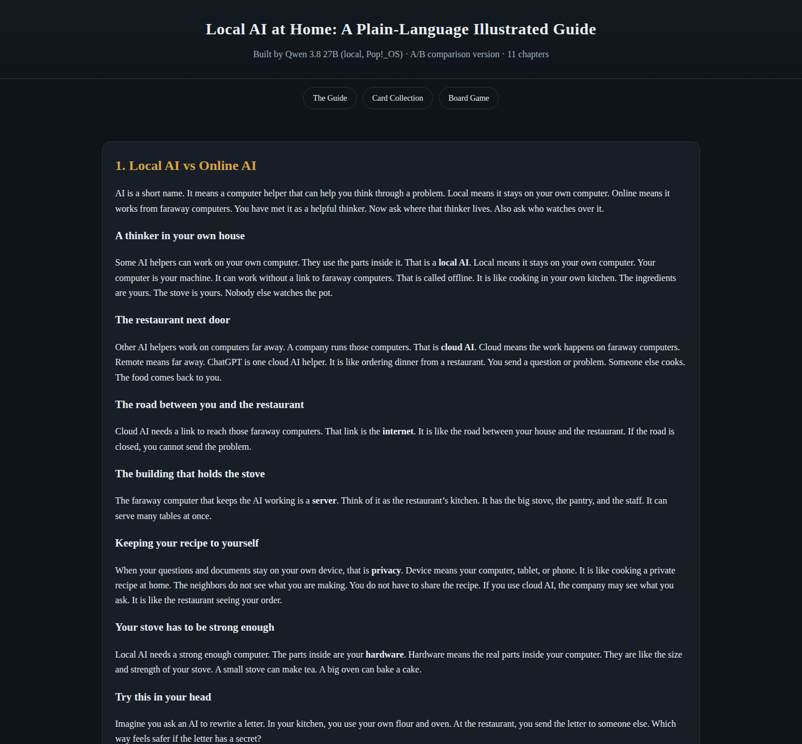
27B's site — same brief, no scaffolding.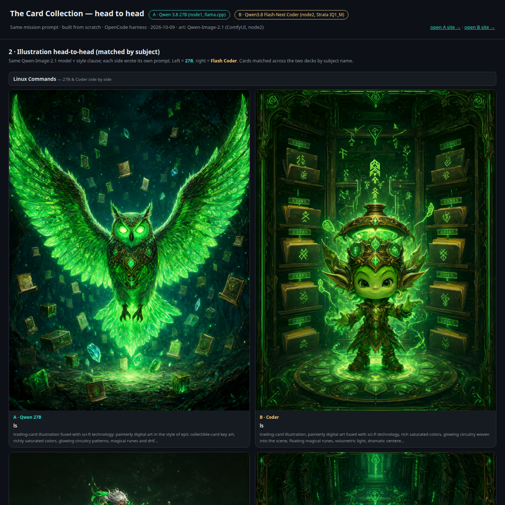
Side by side: Strata IQ2_XS (left) vs Qwen3.8-27B (right).Building the Miller POD store (Arabic + English, RTL, "Abu Dhabi" in Arabic
labels) is where Coder IQ1_M's non-Latin token-loop showed up.
data/miller-arabic-failures.csv (source:
pod-concept/reports/coder-vs-27b-combined-report.md +
loop-test-3models-16384.md).
In OpenCode: 11 unique prompts, 14 attempts (three retries: p03b, p06b, p08r — the report's own tally line, "6 pass / 2 partial / 5 fail" = 13, predates the p08r re-run and doesn't match its per-prompt table, which sums to 7 / 2 / 5):
| Prompt | Coder IQ1_M | Failure signature |
|---|---|---|
| p06b (big redesign, retry) | ❌ 2 m 51 s, 0 tools | degenerate loop: I'll use "أبو Dhabi" = "Abu Dhabi". repeated to the output cap |
| p09 | ❌ 2 m 19 s, 0 tools | degenerate loop: Cyrillic раheck cycle |
| p11 | ❌ 2 m 04 s, 0 tools | degenerate loop: Абу/Abu/АбуDhabi/AbuDhabi cycle |
| p03 (1st) | ❌ 3 m 09 s, 0 tools | 16,384 tokens all burned in reasoning_content → empty visible content, finish=length (thinking-budget exhaustion) |
| p04 | ❌ wedged 36 m | model left setsid bash pipes open; OpenCode has no tool timeout (shared model+harness fault) |
| p08 | ⚠️ 14 m 35 s | real work done (83,451 out tokens) then cut by output limit; 3 invalid parses (passed on the 32K-limit retry, p08r) |
| Per the report's table | 7 pass / 2 partial / 5 fail (14 attempts) | 3 degenerate token loops, 1 thinking-budget exhaustion, 1 output-limit cut, 1 wedged tool |
The report's headline "5 degenerate loops" counts the two limit/budget cuts (p03, p08) as loops; only p06b, p09, p11 are true token-repetition loops. 0 repeated identical tool calls on either side.
The 27B ran the identical 11 prompts (13 attempts incl. p03b/p06b): 10 pass / 1 asked-a-question / 2 fail — 0 loops. Its only 2 failures were 60-minute orchestrator caps while genuinely still working (real brand PNGs, background removal, i18n in progress at the cap both times). The loops are a Coder-model artifact on Arabic↔Latin/Cyrillic transliteration, not a prompt or harness issue. One caveat: no higher-quant Coder exists, so I can't separate the loop from the IQ1_M quant — the 27B comparison isolates the model, not the quant.
Root-caused with a controlled raw-API test (identical short prompt: delivery labels for Abu Dhabi/Dubai in Cyrillic + Latin, max_tokens 16,384):
| Condition | Result |
|---|---|
| Coder, thinking ON (default high) | 2/5 clean, 3/5 FAIL — 16,384 tokens all in reasoning_content, empty content, finish=length |
Coder, thinking OFF (reasoning_effort=none) |
5/5 clean in 0.2–0.9 s |
| IQ2_XS, thinking on | 5/5 clean (0.3–1.2 s) |
| 27B, thinking on | 5/5 clean (9–29 s) |
So two distinct Coder failure modes, both reproduced: (a) thinking-budget
exhaustion — high thinking runs unbounded at the cap and returns empty
content (fix: reasoning_effort=none or a small reasoning_budget_tokens);
(b) the OpenCode transliteration loops — token repetition in visible
content on mixed-script text, non-deterministic. Penalty params did not
suppress them in my small tests (repetition_penalty 1.3, presence/frequency
1.0, even temperature 0) — but that's 3–5 runs per condition, too few to
declare them hopeless; I'm reporting "not fixed in a small test," not "cannot
be fixed." The practical rule that came out of it: don't point the Coder
build at Arabic/RTL content — use IQ3_S or the 27B for that.
Standard 17-prompt harness against Coder IQ1_M on node2. All 17 prompts
failed instantly (data/opencode-bench-17.csv, data/task_17prompt_bench.csv):
every prompt exit_code=1, 5.6–6.0 s, 0 tool calls, 0 steps, 0 output
tokens, 0 new files, error Unexpected server error. Not a model result —
an infrastructure one: the node2 coder log at that window shows repeated
native head upload: out of memory (24 MiB of 24124 MiB VRAM free) and
mtp: buffers do not fit. The 3090 was occupied by another GPU workload,
so Strata couldn't even allocate its MTP buffers. Lesson I'll keep: on a
shared 3090, run one GPU-heavy thing at a time — Strata holds ~21.8–23.7 GB
loaded.
Same models, two different ways to drive them. The difference showed up in the failures, not the successes:
OpenCode (opencode run --format json) |
Hermes (me, orchestrating) | |
|---|---|---|
| Silence | Silent until the task ends. 27B p01 ran 46 m 15 s (96 tool calls) and p04 32 m 09 s with zero intermediate output — I was polling a black box. A 157 s "missing or wrong API key" outage turned out (MITM-verified) to be the client retrying a dead tunnel socket; zero 401s ever reached Strata | Narrates every step; I could watch the research chain land doc by doc and kill/steer mid-run |
| Loops & wedges | No tool timeout: p04 was wedged 36 min after the model left setsid bash pipes open — only SIGTERM freed it. 6 concurrent runs race shared XDG state → all fast-fail "wrong API key" |
I serialized the research chain after the first race (my mistake, below), and built a MITM proxy to catch the 157 s incident in the act |
| Recovery | 60-minute orchestrator cap SIGTERMs long tasks (27B p06/p06b died at the cap while still mid-work); recovery = re-launch from scratch | I verified every gate myself (pypdf 81/81 card names, DOM smoke tests, real-browser picker check) and wrote the scaffolding the models needed: continuation chaining, the dedupe pass, the element-spec SVG pipeline — that was the orchestrator, not the model |
The degenerate token loops (Benchmark 6) were model-side, not harness-side. What's harness-side: the XDG concurrency race, the dead-tunnel retry with no error context, the missing tool timeout, and the hard 60-min cap. A silent harness makes all four of those invisible until the task fails — which is exactly why the 27B's 46-minute runs felt like the machine had frozen.
data/failures.csv (12 entries), abridged:
| # | What | Root cause | Resolution |
|---|---|---|---|
| F1 | node2 IQ2_XS serve aborted in a loop (exit -6, SIGABRT; "26 MiB of 24124 MiB VRAM free — LOW"); requests returned 0 tokens | The crash log (strata_cardbuild.log) advertises node2's IP (192.168.77.2) — an earlier draft wrongly attributed it to Pop/Cosmic. It was a VRAM exhaustion on node2's shared 3090, consistent with F11 (orphan engine PIDs holding 15.2 GiB after stop); the 39 GB page-lock also exceeded 30 GB RAM |
Killed orphans; one GPU-heavy workload at a time; low-RAM mode (16.95 GiB resident). Pop's own Strata logs show clean runs, no crash |
| F2 | IQ3_XXS download on Pop failed: HTTP 416, 67.6 GB written but server shard is 47.0 GB |
setup-script resume wrote past the real file size | delete + re-download; it then ran fine on Pop (mmap fallback, 23.9 tok/s token-weighted) |
| F3 | Strata vision rebuild (llama.cpp submodule) interrupted twice on Pop | my Ctrl-C, not a compile error | build resumed + completed |
| F4 | 17-prompt bench 17/17 fail (Benchmark 7) | GPU occupied by another workload (24 MiB VRAM free) | re-run when the 3090 is clear; one GPU-heavy thing at a time |
| F5 | 27B bench: p06 + p06b hit the 60-min orchestrator cap (SIGTERM) | long task exceeds 60 min at 27B speed | cap is by design (policy, not model) |
| F6 | Illustrated-Guide: 58.5% of calls stalled at ~80–115 tokens | IQ2_XS per-call truncation (Benchmark 5) | continuation chaining + local validation; quant choice is the real fix |
| F7 | 639-min gap in guide run-log | overnight pipeline pause, not a hang | flagged for transparency; active time reported alongside wall |
| F8 | "Grep loop" incident (30+ identical tool calls, nothing built) | I reported it in the moment; UNVERIFIED — no artifact located afterward | left marked unverified |
| F9 | Dubai build: 6 concurrent opencode.exe in one workdir all fast-fail "wrong API key" |
OpenCode XDG state race | serialize runs; retry ≤3×; fit_max_tokens: true (applied + verified) |
| F10 | Dubai build: all 39 Qwen-Image generations = pure noise (100%) | yukio ComfyUI/venv broken on Turing GPUs (env, not model) | re-rendered final tiles on node2 ComfyUI: 33/33 clean |
| F11 | Strata VRAM not released after systemctl stop on node2 (15,226 MiB held) |
orphan engine PIDs | killed orphans → VRAM freed |
| F12 | Coder Arabic transliteration loops + thinking-budget exhaustion (Benchmark 6) | model artifact on mixed-script text; penalties not fixed in small tests | route Arabic work to IQ3_S/27B; reasoning_effort=none for short deterministic calls |
systemctl stop (F11) — the same GPU then aborted the next serve with
"26 MiB VRAM free" (F1). One nvidia-smi check after every stop would
have prevented it.limit.output=16384 without a thinking budget — Coder burned the
whole budget in reasoning_content and returned an empty answer (p03).nvidia-smi would have shown it.| Machine | What to run | Key settings | Why |
|---|---|---|---|
| yukio (121 GiB, 2× RTX 5000, headless) | IQ3_S (79 GB) | full residency, --spec 4 --mtp, KV int8, 131K ctx, reasoning_effort=low, budget 2048 |
the only machine that fits the top quant; the overnight Dubai build proves the workload |
| node2 (30 GB, 3090, headless) | Coder IQ1_M (58 GB) for coding; IQ2_XS only with scaffolding | low-RAM mode (≤17 GiB resident), --spec 4 --mtp, KV int8; one GPU workload at a time; check nvidia-smi after every stop; reasoning_effort=none for short deterministic calls; keep it away from Arabic/RTL |
VRAM and RAM are both tight; the truncation bug (IQ2_XS) and the token loops (Coder) set the workload boundaries |
| Pop!_OS (62 GB, 3090 Ti, Cosmic) | Qwen3.8-27B UD-Q4_K_M (llama.cpp) as the default; IQ2_XS (full residency) or IQ3_XXS (mmap) on Strata when you want the MoE | 27B: -ngl all -c 131072 --cache-type-k v q4_0 --spec-type draft-mtp --spec-draft-n-max 2; don't co-locate Strata and the 27B on the 3090 Ti at the same time |
62 GB holds 68 GB IQ2_XS comfortably; the 79 GB IQ3_S never fits; the shared GPU is the constraint |
Strata + Qwen3.8-Flash-Next is a real, fast, local 125B MoE — and the resident-RAM-experts design plus the machine you put it on decide what you get:
reasoning_effort=none for short deterministic calls.Full reproducibility: raw CSVs in data/, source logs cited per figure,
screenshots in screenshots/.
Data sources (all on-disk, verifiable): data/cross-quant.csv,
data/engine_throughput.csv, data/dubai-build-phases.csv,
data/miller-arabic-failures.csv, data/task_card_collection.csv,
data/card-bench-ab.csv, data/task_illustrated_guide_rebuild.csv,
data/opencode-bench-17.csv, data/task_17prompt_bench.csv,
data/failures.csv, data/hardware-versions.csv,
data/flash-next-rollup.csv, data/flash-next-stages.csv.